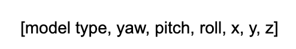
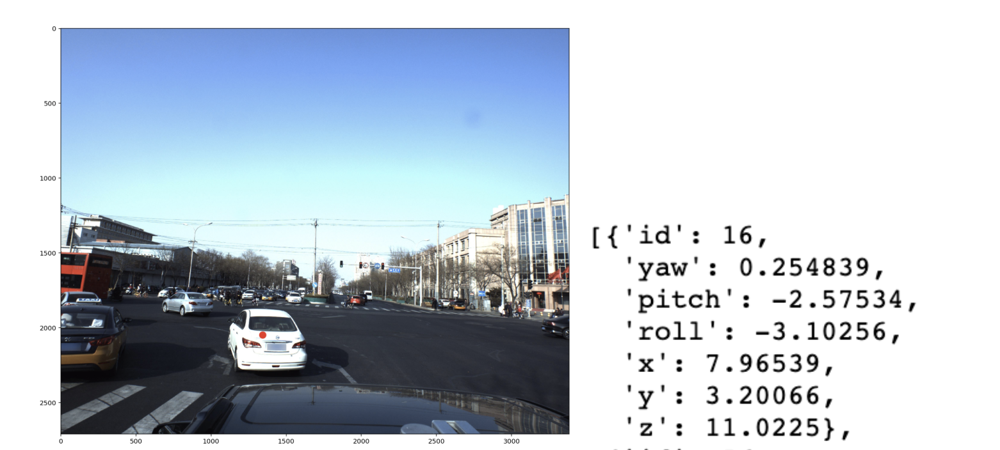
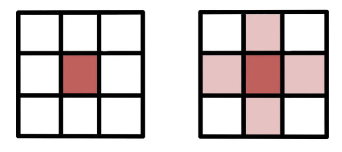
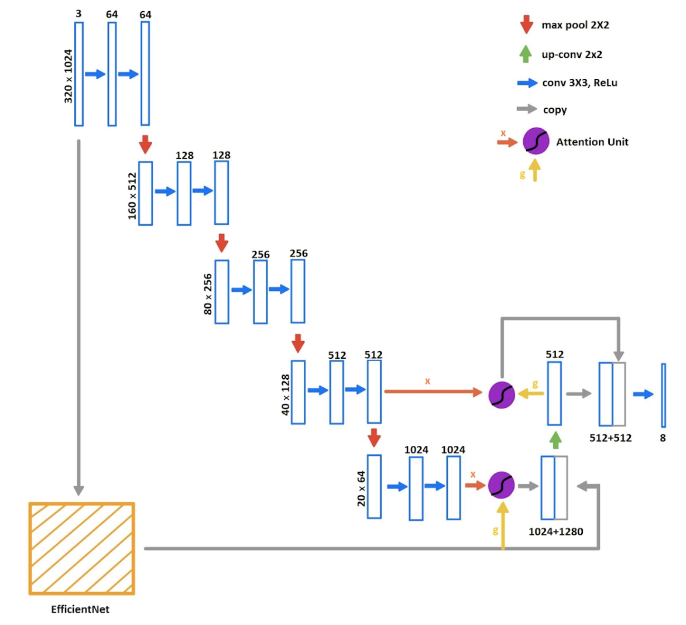
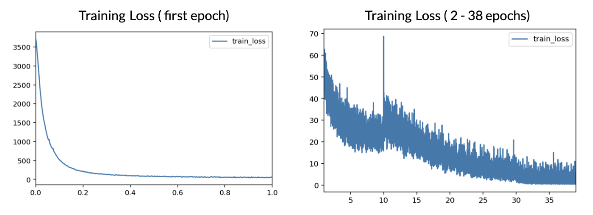
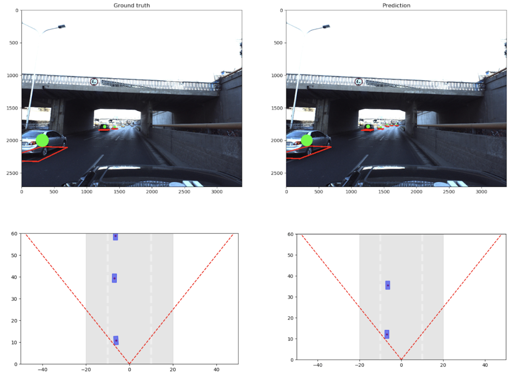
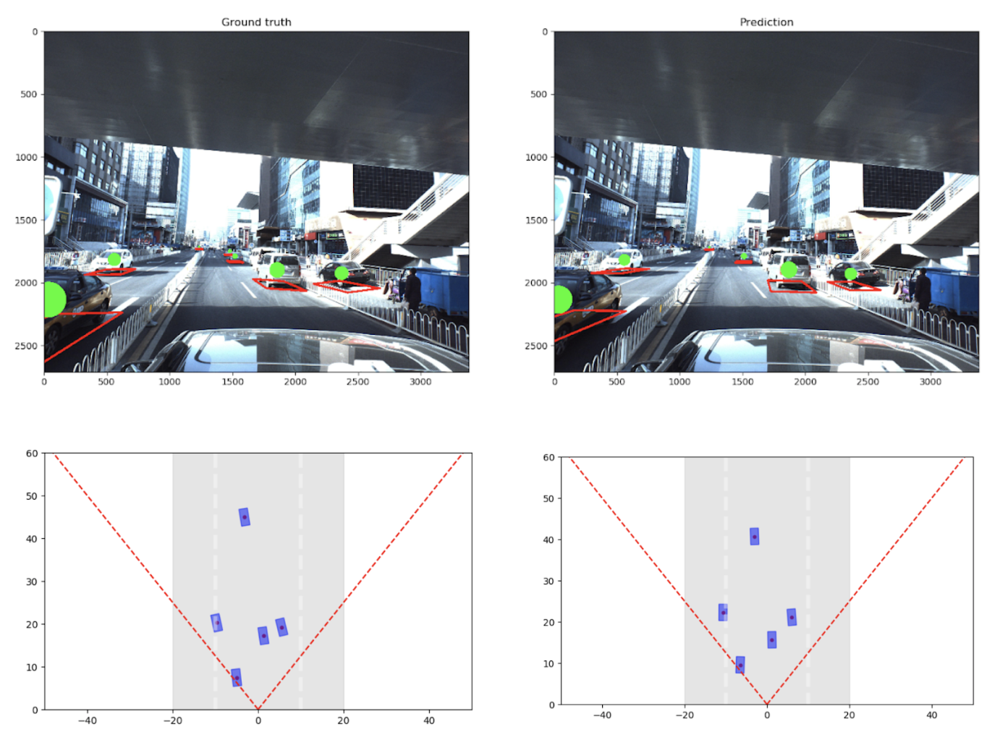
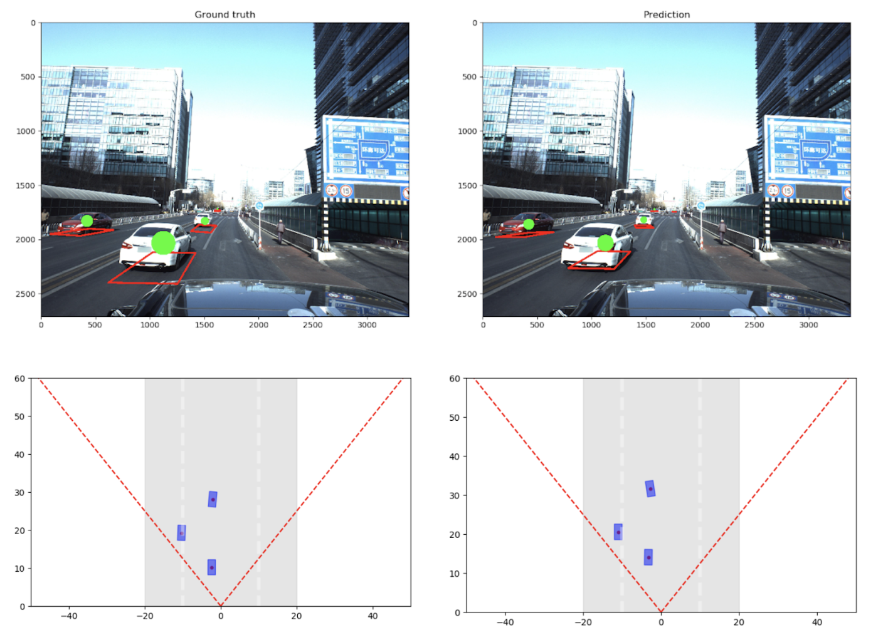

Linkedin
LinkedinVehicle Pose Estimation Based On Monocular Vision
1. Introduction
The concept of autonomous driving has been studied for years. One discomforting fact is that more and more highly accurate but expensive sensors are being added to self-driving vehicles, which greatly limits its affordability. There have been some efforts using only cameras to map the road and detecting nearby vehicles. Many challenges still remain but we want to make some contribution to it. The goal of this project is to develop an algorithm to estimate the absolute pose of vehicles (6 degrees of freedom) from a single image in a real-world traffic environment. The result suggests that with a well-designed system, a monocular vision is sufficient to make a reliable estimation in a self-driving problem.
2. Dataset
Our dataset comes from the kaggle competition “Peking University/Baidu - Autonomous Driving”. It contains 60,000 labeled 3D car instances from 5,277 real-world images. Each sample contains information on the absolute pose of the information. For example, the labels are as follows:
The 3D Car models are also available and they are used in determining the model type of the specific cars in the image. Image Masks are also used to filter out irrelevant cars that do not need to be predicted.
3. Method
3.1. Data Preprocessing
For the data preprocessing, we borrow the code from Ruslan Baynazarov[5], who provided some excellent works on this project as a baseline. For the input image, since cars can’t fly and all vehicles exist on the bottom half of the image, the images were cropped by half and resized to a reasonable resolution. He later added two mesh channels to the image for better positioning. After testing we found out that mesh channels didn’t affect the performance of the model so much but introduced more parameters, so we remove them.
When constructing training labels, eight channels were built based on the ground truth. The first channel is heatmap, which is the center point of the vehicle mapped in a 2d image. The original heatmap[5] was generated by the way that only the points that are overlain with the center point are labeled as 1, whereas other points are 0. Inspired by the work of CenterNet[4], we also labeled the surrounding points of the true center points to 0.5 for a reduced negative loss. The position and pose of the detected vehicles were regressed by the other 7 channels. Because the distribution of pitch is around 0 and ± pi, to better regress pitch, Ruslan converts it to cos(pitch) and sin(pitch)[5]. Now the 7 channels are x, y, z, roll, pitch_sin, pitch_cos, yaw.
We also explored the possibility of using the output in the spherical coordinate frame instead of the cartesian coordinate frame. In that way we converted the position from x, y, z to r, theta, phi and ran some tests. More details about that will be discussed later.
3.2. Network Architecture
UNet[6] has been proven to outperform many architectures in the medical image segmentation problem. The key ideal of UNet is using an encoder, a decoder and skipped connections. As is shown in the figure, the main structure of our network is a UNet-like encoder. Double convolution layers with max-pooling are applied here to encode the image. The size of the input data is scaled down from 320X1024 to 20X64, and the number of channels is expended to 1024. After that, we borrowed the code from LeeJunHyun to add attention modules[7]. A pre-trained EfficientNet[8] is also used here to provide the gate signal. The reason we did this is trying to use the features extracted by EfficientNet to let the model know which part of the encoded information it needs to pay attention to, i.e, add weights to it. Afterward, the weighted outputs are concatenated with the EfficientNet output and up-sampled. Later the up-sampled features will be used again as another gate signal to weight the features of the previous layer output.
The shape of the final output is 8X40X128. Follow the ideal of CenterNet[4], the first channel of the output will be a heatmap, which produces the possibility of the pixel representing a vehicle. We tried many ways to extract predictions from a heatmap. The original one proposed in the baseline model and also the easiest one is setting up a threshold[5]. Several problems exist such as duplicated predictions on the same vehicle and missing some local maximum. To address this issue, we developed a peak detection algorithm. The algorithm works by detecting the points that have values greater than all its surrounding points. Based on the heatmap prediction, we regress the pose information by the rest of the seven channels that represent each of the attributes.
4. Training
We trained models and conducted experiments on the following environment:
Four Tesla k4 GPU
7.5 GB 4 core CPU
Pytorch - running on parallel computing
We have tried many ways to improve the baseline notebook that was offered on kaggle. This range from converting the labels from the raw x,y, z coordinates to spherical coordinates. Also, increase the output heatmap resolution, but these alternation does not improve results significantly. Validating the result of these findings took many days. We ran many GCP instances with GPU and a new set of higher resolution heatmaps were generated.
The best result still comes from unaltered pose information combine with the attention mechanism on the upsample. We train with a batch size of 16, which is the maximum amount of memory allowed for the GPU’s that we have. The learning rate is 0.00. Below is the training loss for our model.
5. Result
Following are some examples of results of test set, which were never seen by the network.
  Reference
[1] DenseBox: https://arxiv.org/pdf/1509.04874.pdf
[2] Yolo: https://arxiv.org/pdf/1506.02640v5.pdf
[3] Complexer-YOLO: https://arxiv.org/pdf/1904.07537.pdf
[4] CenterNet: https://arxiv.org/pdf/1904.07850.pdf
[5] Baseline: https://www.kaggle.com/hocop1/centernet-baseline
[6] UNet: https://arxiv.org/pdf/1505.04597.pdf
[7] Attention UNet: https://github.com/LeeJunHyun/Image_Segmentation
[8] EfficientNet: https://arxiv.org/pdf/1905.11946.pdf